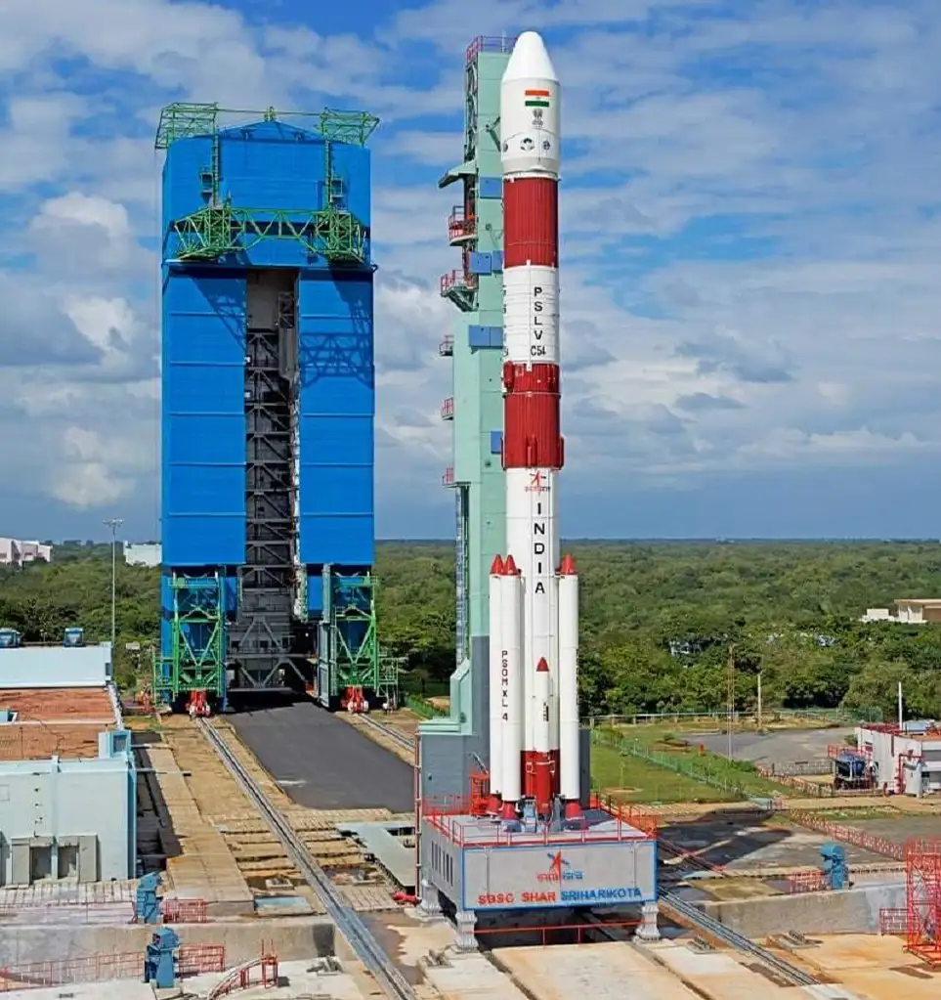
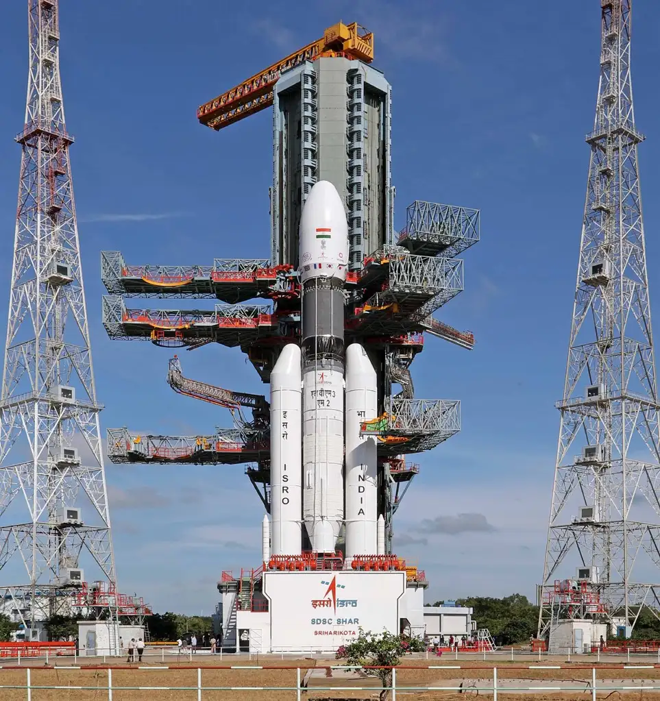
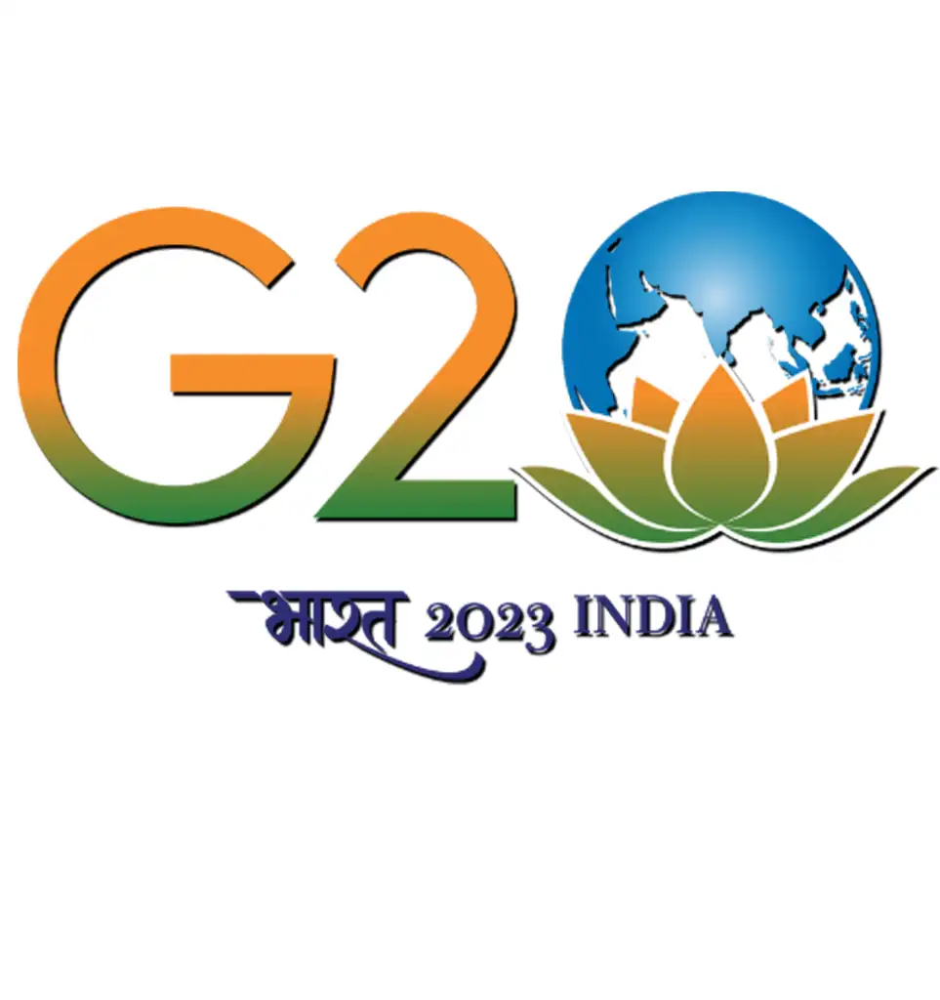

Gallary


ISRO’s work horse PSLV-C54 has successfully launched EOS-06 satellite along with Eight Nano-satellites
into two different SSPOs. The mission was accomplished from Satish Dhawan Space Centre SHAR on 26th
November 2022.
EOS-06 is third generation satellite in the Oceansat series, which provides continued services of
Oceansat-2 with enhanced payload capability. The satellite onboard carries four important payloads viz.
Ocean Color Monitor (OCM-3), Sea Surface Temperature Monitor (SSTM), Ku-Band Scatterometer (SCAT-3),
ARGOS. The Oceansat-2 which was a launched during Sept-2009 configured to cover global oceans and
provide continuity of ocean colour data with global wind vector and characterization of lower atmosphere
and ionosphere. The mission resulted in many research collaborations nationally and internationally on
various areas global chlorophyll distribution, Kd 490 distribution, ocean color images, oil spillages,
wind vector products.
